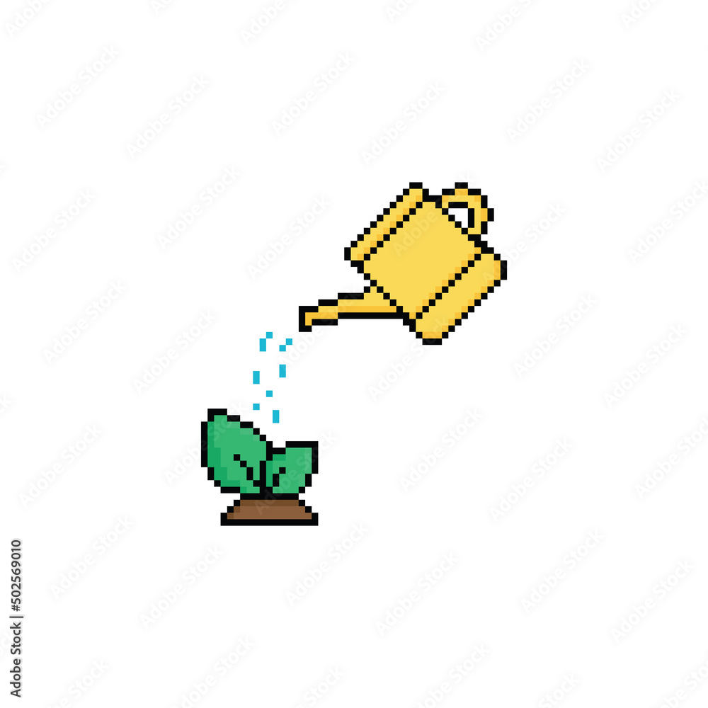
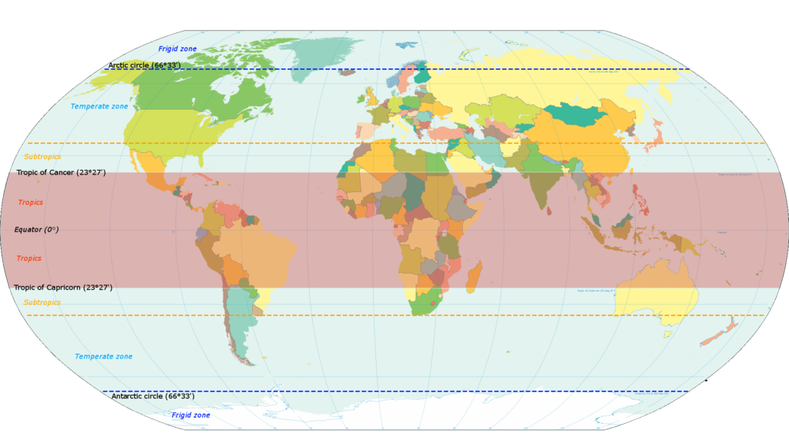
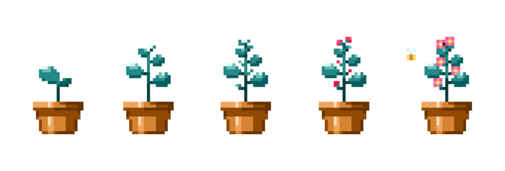

Kasveja, joita usein pidetään sisätiloissa huonekasveina, on useita satoja jollei tuhansia lajeja.
Yleisimmät huonekasvit ovat alunperin trooppisista olosuhteista, kuten Etelä-Amerikasta, Afrikasta tai Kaakkois-Aasiasta.
Tämä tulisi huomioida kasvien hoidossa erityisesti Suomessa, jossa kasvien luonnolliset olosuhteet eivät toteudu.
 
Kotona kasvien vihreys piristää ihmisiä ja tuo luontoa sisälle kotiin.
Kasvien kasvattaminen on monelle mieluinen harrastus, ja niiden kasvun seuraamisesta saakin hyvän mielen.
